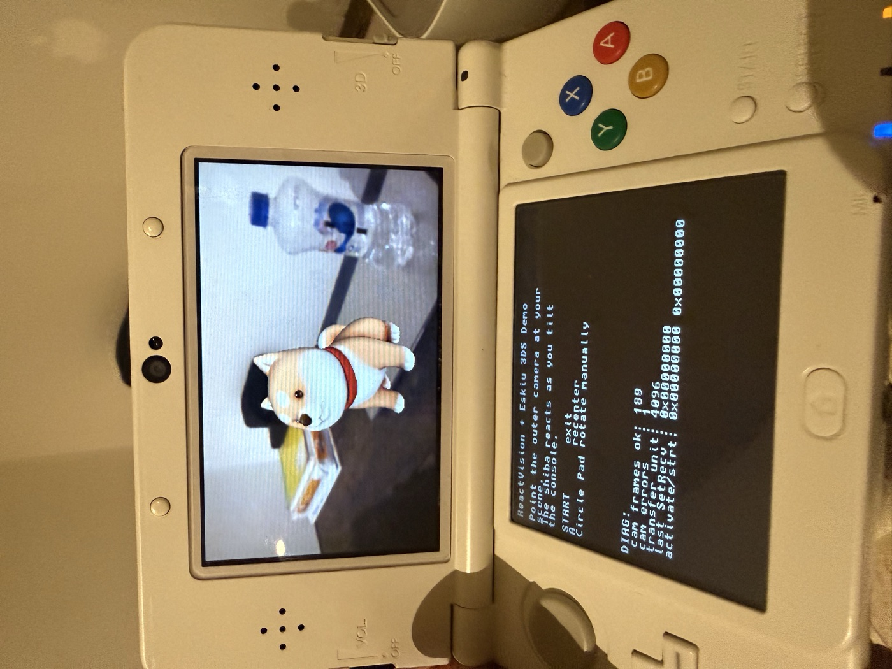

The Nintendo 3DS runs an ARM11 (ARMv6k, 32-bit) application
processor and a fixed-function-ish PICA200 GPU. Its homebrew
scene is mature: devkitARM (a GCC toolchain), libctru
for the hardware, and citro3d / citro2d for the GPU. Programs
ship as a relocatable .3dsx that the Homebrew Launcher loads at an
arbitrary address.
Everything in that ecosystem assumes C. The goal was to make Eskiu, a native, LLVM-based systems language, a first-class citizen on the device: compile Eskiu to the ARM11, link it against libctru, and drive the camera and the GPU from Eskiu code.
Eskiu already cross-compiles (its example kernel boots on ARM64 in QEMU), but the 3DS exposed a specific gap: the compiler only registered the AArch64 and x86 LLVM backends. The 3DS is 32-bit ARM, a different backend entirely. Three things stood between "compiles" and "boots", and each produced a different failure:
lookupTarget("armv6k-...")
returned nothing, because the 32-bit ARM target was never initialized. Adding
the LLVMInitializeARM* calls, and linking the ARM backend
libraries, was the price of entry.hf suffix on the
triple (armv6k-none-eabihf) and sets the hard-float ABI, so the
object carries the Tag_ABI_VFP_args attribute; --mcpu
mpcore selects the ARM11's VFPv2..3dsx
is relocated statically by the loader, which has no dynamic linker to
populate that GOT, so every global access read garbage. A
static relocation model (--reloc static)
produced the R_ARM_ABS32 relocations devkitARM emits, and the
crash was gone.
Those became real, general compiler features: a 32-bit ARM backend,
and the --mcpu, --mattr, and --reloc flags.
With them, a "hello world" written in Eskiu links against libctru and builds a
.3dsx.
A program needs the SDK. libctru alone is hundreds of functions and dozens of
structs, and citro3d/citro2d add hundreds more. Hand-writing extern
declarations is tedious and a place for silent, dangerous mistakes: a wrong
struct field order or enum value corrupts memory with no error.
So the bindings are generated, bindgen-style, from
clang's JSON AST of the SDK headers. Functions become
extern declarations, structs and unions are reproduced
field-for-field, enum values are read already-evaluated, and anything that
can't be mapped safely is skipped with a // TODO rather than
guessed. One run produced typed Eskiu bindings for libctru (graphics, input,
GPU events, console), the camera, citro3d
(~140 functions, 17 structs), and citro2d, on the order of
360 typed bindings. The generator reproduced automatically
exactly the details that are easy to get wrong by hand: the gyroscope struct's
unusual {x, z, y} field order, an event enum whose values are
implicit, packed layouts.
What the AST can't express, libctru's many static inline and macro
helpers that have no linkable symbol, is bridged by a thin hand-written layer,
the same way bindgen users add a small shim.
The application is a compact piece of augmented reality: the outer camera feed
as the background, and a glTF model (a low-poly shiba, ~4,300
triangles) drawn over it so it sits still in the world as you tilt the console.
Both halves of the AR stack are ReactVision's own. ViroCore, the
engine from the ReactVision case study,
does the rendering: it loads and drives the .glb the same way it does
on the platforms it already ships to, and only the renderer's backend changes on
the 3DS, retargeted to the PICA200 through citro3d. Tracking is
ReactVision's in-house SLAM engine, the same one slated to power
its Web AR without the WebXR APIs, fed on the 3DS by the console's gyroscope. The
camera is captured double-buffered and uploaded to a GPU texture each frame, and
the model is lit and drawn on top. It runs on real 3DS hardware.
Its logic was then rewritten in Eskiu: the main loop, the
gyroscope-to-rotation integration, per-frame render sequencing, the model's
matrices, and memory management all live in Eskiu, calling libctru, citro3d, and
the ViroCore renderer backend directly for every real symbol and going through
the shim only for the inline-heavy GPU calls. The Eskiu build produces the same
.3dsx, and it too was verified running on device.
Driving real hardware is the kind of pressure that finds things. Each of the three boot blockers turned into a compiler capability that outlives the 3DS: 32-bit ARM is a supported target, and the relocation model, CPU, and features are selectable. The camera work, done first in C on the device, produced a reusable, debugged reference: a transfer-unit sizing bug, an unhandled buffer-error path, and a depth-write interaction between the 2D background and the 3D model, all fixed there before the port.
The port surfaced two language gaps, and both are now fixed in the compiler.
extern covered functions but not data symbols, so a C global like a
libctru handle could not be reached directly; extern variables
were added, and a extern int x; now binds a C global. And Eskiu's
float literals are double, which the C float boundary rejected at
link time; the compiler now narrows a float argument to the
parameter type at the call site. Small, concrete constraints, learned by shipping
code onto a device.
So the same language that boots a bare-metal ARM64 kernel, drops a memory-tight module into a C++ rendering engine (see the ReactVision case study), and decodes a real cryptographic format over HTTP (see the INE case study) now compiles to a 12-year-old handheld's ARM11 and drives its camera and GPU, running the same ViroCore engine through citro3d.